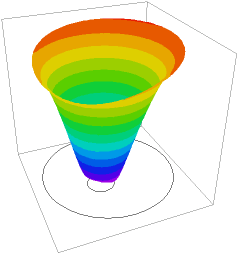

|
reaction |

  
|
|
reaction |
|
{ REACTION.PDE
This example shows the application of FlexPDE to the solution
of reaction-diffusion problems.
We describe three chemical components, A,B and C, which react and
diffuse, and a temperature, which is affected by the reactions.
I) A combines with B to form C, liberating heat.
II) C decomposes to A and B, absorbing heat. The decomposition rate
is temperature dependent.
III) A, B, C and Temperature diffuse with differing diffusion constants.
The boundary of the vessel is held cold, and heat is applied
to a circular exclusion patch near the center, intended to model an
immersion heater.
A, B and C cannot diffuse out the boundary.
The complete equations including the Arrhenius terms that describe
the system are:
div(Kt*grad(Temp)) + heat + K1*exp(-H1/(Temp+273))*eabs*A*B
- K2*exp(-H2/(Temp+273))*eabs*C*(Temp+273) = 0
div(Ka*grad(A)) - K1*exp(-H1/(Temp+273))*A*B
+ K2*exp(-H2/(Temp+273))*C*(Temp+273) = 0
div(Kb*grad(B)) - K1*exp(-H1/(Temp+273))*A*B
+ K2*exp(-H2/(Temp+273))*C*(Temp+273) = 0
div(Kc*grad(C)) + K1*exp(-H1/(Temp+273))*A*B
- K2*exp(-H2/(Temp+273))*C*(Temp+273) = 0
where Kt,Ka,Kb and Kc are the diffusion constants, EABS is the heat
liberated when A and B combine, and HEAT is any internal heat source.
Notice that the system is non-linear, as it contains terms involving
A*B and C*Temp.
There are an infinite number of solutions to these equations, differing
only in the total particle count. In reality, since particles are
conserved, the final solution is uniquely determined by the initial
conditions. But this fact is not embodied in the steady-state equations.
The only way to impose this condition on the steady-state system
is through an integral constraint equation, which describes the
conservation of total particle number.
}
title "Chemical Beaker"
variables { declare the system variables }
temp,a,b,c
definitions
kt = 0.001 { define the diffusivities }
ka = 0.005
kb = 0.02
kc = 0.01
heat = 0 { define the volume heat source }
eabs = 0.0025 { define the reaction energy }
K1 = 1 { Reaction rate coef for A + B -> C }
H1 = 10 { Activation energy/K for A + B -> C }
K2 = 0.0025 { Reaction rate coef for C -> A + B }
H2 = 200 { Activation energy/K for C -> A + B }
a0 = 0.1 { define the initial distribution }
b0 = 0.1 { (we will need this for the constraint) }
c0 = 0.01
tabs = Temp+273
tfac1 = K1*exp(-H1/tabs)
tfac2 = K2*exp(-H2/tabs)
initial values { Initialize the variables }
temp = 100*(1-x^2-y^2)
a = a0
b = b0
c = c0
equations { define the equations }
temp: div(kt*grad(Temp)) + heat + tfac1*eabs*a*b - tfac2*eabs*c*tabs = 0
a: div(ka*grad(a)) - tfac1*a*b + tfac2*c*tabs = 0
b: div(kb*grad(b)) - tfac1*a*b + tfac2*c*tabs = 0
c: div(kc*grad(c)) + tfac1*a*b - tfac2*c*tabs = 0
constraints { demand particle conservation }
integral(a+b+2*c) = integral(a0+b0+2*c0)
boundaries
Region 1
{ the cold outer boundary - impermeable to the chemicals }
start(0,-1)
value(temp)= 0
natural(a) = 0
natural(b) = 0
natural(c) = 0
arc to (1,0) to (0,1) to (-1,0) to close
{ the hot inner boundary - also impermeable to the chemicals }
start(-0.2,0) value(temp)= 100 natural(a) = 0 natural(b) = 0 natural(c) = 0 arc(center=-0.2,-0.2) angle 360
monitors contour(temp) contour(a) contour(b) contour(c)
plots contour(temp) contour(a) contour(b) contour(c) surface(temp) as "temperature" surface(a) as "A-concentration" surface(b) as "B-concentration" surface(c) as "C-concentration"
end
|
 |